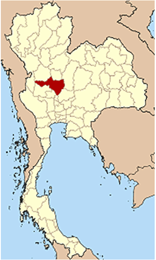
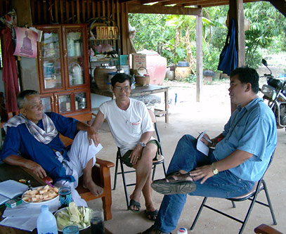
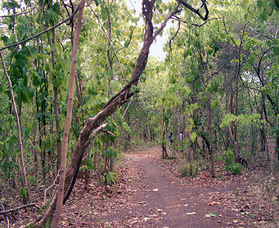
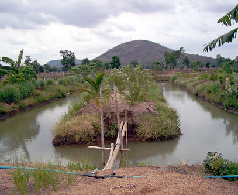
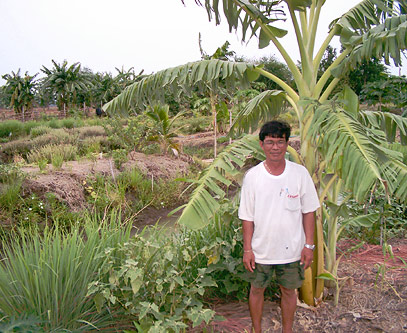
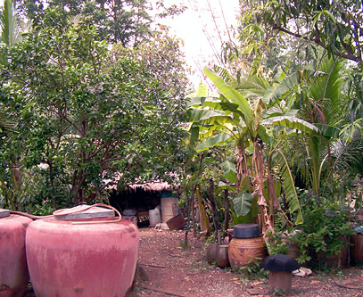

EcoTipping Point Reverses Deforestation in Thailand
- Authors: Gerald Marten and Amanda Suutari
- Editorial Contributions: Jerry Burris, Andrew Mittelman
- See the detailed source document on which this article is based
- Watch a 14-minute video based on this story
Government promotion of export-oriented agriculture was pushing farmers into a downward spiral. Increasing cash outlays for chemical fertilizers and pesticides, destruction of natural soil fertility as a result of heavy chemical application and soil erosion, and water shortages due to extensive deforestation had left rural families with debilitating debts and a sense of desperation. But in 1988, when a development project helped farmers to critically examine the causes of their predicament, there emerged a shared understanding of the scenario which had entrapped them in a seemingly irreversible quagmire. The farmers charted a strategy to restore their environment, economy, and community – a diversified strategy based on agroforestry, local processing of agricultural products, and community forest management. This strategy enabled farmers to reclaim control of their lives and reverse decades of ecological, economic and social degradation. At the same time, the recovery of their forests captured carbon dioxide from the atmosphere, thereby helping to curb global climate change.
Amid all the focus today on climate change and greenhouse gas emissions, an important fact often gets overlooked: worldwide, the destruction of forests rivals automobiles as a source of carbon emissions. According to recent studies, the cutting and burning of forests – primarily tropical rainforests – is responsible for up to 30 percent of all greenhouse gas emissions.
Often the destruction of forests is tied to a host of economic and social conditions that can trigger the sadly familiar scenario of a seemingly irreversible ecological and social slide. However, research has shown that such a decline can, in fact, be turned around through an EcoTipping Point – a term we have coined to describe a combination of sensible environmental technology and the social organization to put it into use.
The story of one Thai farmer and his village illustrates how an EcoTipping Point can work.
In 1954, Thanawm Chuwaingan migrated from the impoverished Khorat Plateau of Northeast Thailand to Khao Din village in Nakhon Sawan province, about 225 kilometers north of Bangkok, to stake a claim on newly opened forest land. The journey was in carts pulled by cattle.
"It was easy to find food here," says Thanawm. "There were many edible plants and vegetables growing wild near our houses. The fish in the streams were easy to catch, and there were also plenty of wild animals, like boars, deer, tigers and elephants. Life was simpler."
With abundance at hand and a cooperative spirit in the village, life was good. But things started to change in the 1960s and ’70s, when the Thai government decided to pursue a Western growth model with export-led development as its centerpiece. The policy was to utilize forests and agricultural production as resources for foreign exchange revenue to generate investment in a growing manufacturing sector.
Half of the kingdom’s forests, fisheries and agricultural areas were reoriented toward overseas markets. And if overall growth in gross domestic product is your yardstick, the approach was a raging success. Over three decades growth rates ran about 10 percent a year – one of the fastest in the world.
But for small-scale farmer Thanawm and millions like him, the story was entirely different.
The government wanted the farmers to modernize and grow cash crops such as rice, maize, jute, and cassava for export. Forests were cut to sell the timber and expand the farmland. The government provided loans intended for inputs such as hybrid seed, chemical fertilizers, pesticides, and farm equipment.
But the farmers, who never had so much money in their pockets before, also used the loans to buy radios, motorcycles and other modern merchandise. And after the initial flush of quick cash, crop prices began to decline because so many farmers were growing the same thing.
Then matters suddenly became worse when droughts came and their crops started to fail. People began to go deeper into debt. In a relatively few years, Thanawm and his family went from near Eden-like abundance and comfort to a hardscrabble existence typified by hunger, poverty and social disintegration.
Desperate to make good on their debts, villagers cut the last remnants of forest to expand their fields. "By that time, there were virtually no trees left on the hillsides. It became hotter and drier," Thanawm said.
The soil, which had been fertile for years, was eroded and became progressively harder with continued use of chemical fertilizers. Rainwater just ran off. Crop yields declined.
People started to have to look for work in the cities during the dry season in order to pay their debts. Families were split up. "Unlike in the past when people really cared for one another, everyone was now worried about their own fields and their own family’s problems," Thanawm said. "For the first time ever, we began to have psychological and social problems. There was little trust and less cooperation."
Wide scale migration in search of urban jobs led to the disintegration of communities. Villages increasingly became populated by the young and elderly. Juvenile delinquency, previously unheard of, emerged as communities were rapidly torn from their traditional social norms.
But fortunately the story does not end there. Thanawm and his fellow villagers made some key changes which set their village and its environmental support system in a positive direction. They created an EcoTipping Point that reversed the decline, restored ecological health, and forged a stronger, more sustainable society.
It began in 1986, when a team from the aid group Save the Children US was sent to Khao Din village by the Thai government. By that time, the district had become one of the nation’s poorest. Rather than simply distributing aid from donors, which had been the norm under the government’s modernization program, the Save the Children team awakened villagers’ awareness about the true source of their predicaments, and then helped them to devise their own solutions.
At first, the villagers were suspicious. Trust grew slowly, through long and at times arduous discussions, during which the aid workers asked villagers questions that enabled them to retrace the steps to their plight. This led to some startling realizations.
Ultimately, villagers recognized that it was they who were primarily responsible for bringing about their problems, through the decisions they had made on how to use and manage their local resources. This shared awareness prompted the villagers to consider what they could do to change the situation, based on their new understanding of the problem and its causes.
The second step came when villagers and the project team formulated an ecologically viable strategy for their community. It began with the realization that it made no sense to "put all of their eggs in one basket," as had been the case with the monoculture cash crop systems. They designed diversified "agroforestry" systems in which trees and crops were interspersed on the same field, resembling in many ways the structure of the natural forest. They also decided to restore their damaged forests with local community protection and management.
Agroforestry was not new to the local farmers. Their now largely abandoned traditional subsistence systems had incorporated many of the same elements. The agroforestry drastically cut household food costs, as well as agricultural input costs, because "nature did much of the work." It simultaneously restored some of the ecological stability to the land that forests had maintained for millennia. Year-round food security increased dramatically. If one crop failed, others would succeed.
At first, only those who could afford to try something different were able to set aside some of their land and energy for the venture. But what started on eight acres of demonstration plots grew year-by-year as more villagers adopted similar approaches on their own farms.
It is more than 10 years since Save the Children finished its project in Khao Din, now a thriving community of 2,500 inhabitants. Twenty-five villages in Nakhon Sawan province are following Khao Din’s example, pursuing a variety of locally designed forms of agroforestry and sustainable agriculture on land covering thousands of acres. Recreating natural ecological processes on the farms has reestablished recycling processes similar to those in natural ecosystems. In an area which, not long ago, had resembled a desert landscape and had been described locally as "bald mountains," soil erosion and degradation due to overuse of chemicals have been reversed.
Natural forests, largely devastated by misuse, are regenerating over an even larger area. The restored forests are repairing damaged watersheds. Streams, along with a variety of animals long thought to be locally extinct, have reemerged. Migration to Bangkok has declined, along with the socially disruptive trends it helped create.
Thanawm summed it up: "Most of all, in terms of change, was the change in people’s thinking. We are learning together as a community, sharing knowledge with each other. People no longer think we are in trouble, and we can do nothing about it. We know now that with some careful thinking and a lot of shared effort, we can solve our problems, and fix what is broken."
"Even though we don’t have much money, I’m happy. We have friends who come to visit and we have enough food for them. We don’t have to buy much of anything."
At the same time Thanawm and his neighbors have secured a better life for themselves, the return of trees to their landscape has removed carbon from the atmosphere. While the details of their experience may not be the answer for every place with apparently irreversible decline, the success in Nakhon Sawan offers an inspiring model for farmers throughout the tropics to reverse deforestation in their communities. The undeniable good news is that EcoTipping Points can in fact be created as levers for positive change.
Gerald Marten is an ecologist at the East-West Center in Honolulu and author of Human Ecology: Basic Concepts for Sustainable Development. Amanda Suutari is an environmental journalist based in Vancouver. To see more on this story and on other similar successes, go to ecotippingpoints.org.
Questions and Answers
Q. What is an EcoTipping Point?
A. Simply, it is a “lever” that reverses environmental decline which often is seen as irreversible once it begins. But once an EcoTipping Point is reached, it sets in motion a healthy cycle of restoration and sustainability.
Q. What makes an EcoTipping Point a success story?
A. We have found several common factors that make it work:
- Some form of environmental technology (in the broadest sense) combines with effective social organization to make the technology work.
- It catalyzes a cascade of effects through the ecosystem and social system
- The cascade has enough force to convert vicious cycles into “virtuous cycles” that lead toward sustainability.
- Outside stimulation is usually needed, often to create community awareness of the problem and an expanded perspective on possible actions.
- Strong local democratic leadership with long-term commitment is critical.
- The community is stimulated by powerful symbols that move the tip forward. Rapid success is one such symbol.
- EcoTipping Points happen when people find ways to “deal with social complexity,” which means breaking out from the surrounding craziness or set ways of thinking that prevent change.
- EcoTipping Points often transform “waste” (e.g., degraded land, sewage, marginalized people) into valued social or material capital.
- EcoTipping Points make use of social and ecological diversity and community memory as a resource.
- EcoTipping Points create resilience to resist negative tips.
- EcoTipping points scale up as people see success and try it themselves.
Q. This sounds wonderful. But does it have any application beyond individual groups of people rescuing their own landscapes and livelihoods?
A. Yes. Positive tips can have impacts well beyond the particular place where they occur. The reversal of tropical deforestation, for instance, can have a direct impact on global warming because forest restoration sequesters carbon, while deforestation releases massive amounts of carbon into the atmosphere.
Q. Is this something that only happens in remote regions of third-world countries?
A. No. They can exist in your own community. Look for opportunities to stop vicious cycles of environmental decline and “tip” things in a positive way.

Map of Thailand showing the location of Nakhon Sawan province.

Thanawm Chuwaingan relaxes outside his home with other community leaders in Khao Din village. (download high-resolution photo)


Khao Din’s community forest, which provides numerous edible and medicinal products harvested according to community agreements. (download high-resolution photo)


The irrigation pond on Thanawm Chuwaingan’s farm. The pond contains fish for sale and household consumption and is surrounded by papaya and banana trees, which not only provide fruit but also prevent soil erosion. (download high-resolution photo)


Thanawm Chuwaingan at his farm. The agroforestry features a variety of trees and crops for food, medicine, and other uses. (download high-resolution photo)


The kitchen garden at Thanawm Chuwaingan’s home. It features a variety of trees and crops for food, medicine, and other uses. The large ceramic pots store rainwater. (download high-resolution photo)